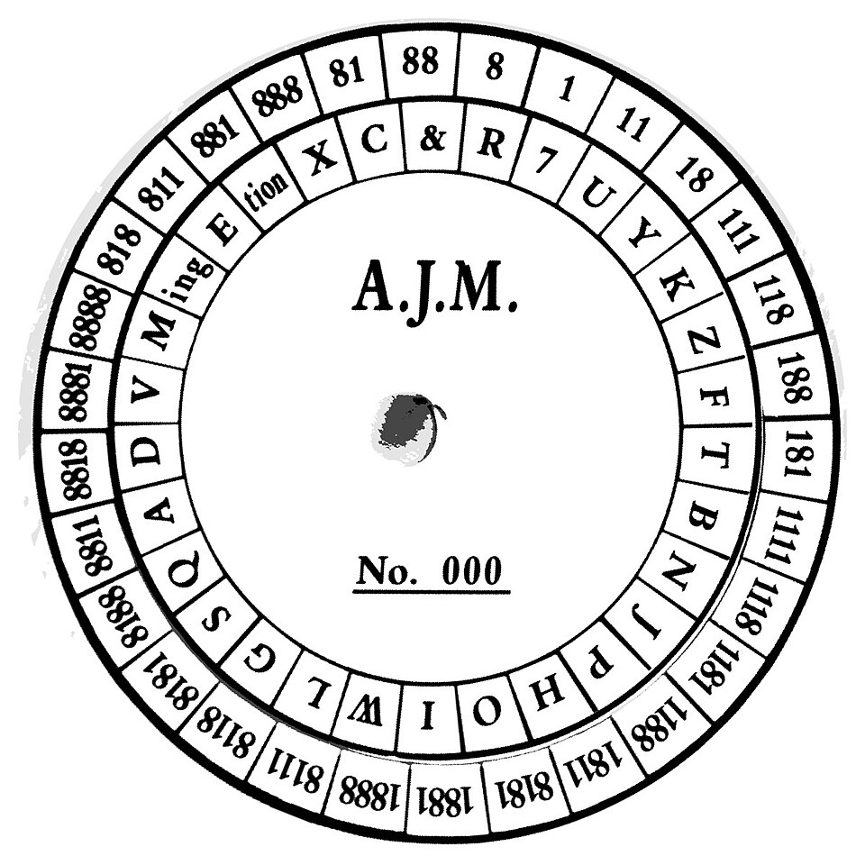

fietzfotos
fietzfotos
Good morning!
Nur das Schöne wird die Welt retten!
Fjodor Dostojewski
Nicht verzagen, Doc Alvers fragen!
Informatik — Grundkurs 11
Wiederholung: IT-Sicherheit
Lernbereich 3 im Überblick — fit für die Klassenarbeit 2
Nicht verzagen, Doc Alvers fragen!
Was drankommt
Klassenarbeit 2 (45 Minuten): Lernbereich 3 — IT-Sicherheit und Ökologie
Bedrohungen, Schutzziele, Maßnahmen zur Datensicherheit, Kryptologie, Datenschutzrecht
Heute: erst der Überblick, dann Wiederholung an Stationen
Leitfrage: Was muss ich sicher können — und wo habe ich noch Lücken?
Nicht verzagen, Doc Alvers fragen!
Kapitel 01
Bedrohungen
Angriffe und Schutzziele

Nicht verzagen, Doc Alvers fragen!
Die Schutzziele
| Schutzziel | heißt | verletzt zum Beispiel durch |
|---|---|---|
| Vertraulichkeit | nur Befugte können lesen | abgefangene Mail, gestohlenes Passwort |
| Integrität | Daten sind unverändert und korrekt | manipulierte Überweisung |
| Verfügbarkeit | Daten und Dienste sind erreichbar | DDoS-Angriff, Ransomware |
| Authentizität | Absender und Daten sind echt | Phishing-Mail mit falschem Absender |
Den Kern bilden Vertraulichkeit, Integrität, Verfügbarkeit — oft kommen Authentizität und Verbindlichkeit dazu
Nicht verzagen, Doc Alvers fragen!
Angriffe erkennen
| Begriff | Merkmal | Schutz |
|---|---|---|
| Virus | hängt sich an eine Wirtsdatei | Updates, Vorsicht bei Anhängen |
| Wurm | verbreitet sich selbst über Netze | Updates, getrennte Netze |
| Ransomware | verschlüsselt Daten, fordert Lösegeld | getrennte, geprüfte Sicherung |
| Social Engineering | nutzt Autorität, Hilfsbereitschaft, Zeitdruck | Schulung, klare Regeln |
| Man in the Middle | schaltet sich in eine Verbindung | Zertifikate, Ende-zu-Ende |
Die meisten Angriffe nutzen bekannte, längst geschlossene Lücken — Updates gehören zu den wirksamsten Maßnahmen
Nicht verzagen, Doc Alvers fragen!
Kapitel 02
Schützen
Maßnahmen und Kryptologie

Nicht verzagen, Doc Alvers fragen!
Maßnahmen zur Datensicherheit
| Stichwort | das Wichtigste |
|---|---|
| vier Gruppen | baulich, technisch, organisatorisch, personell |
| Zutritt, Zugang, Zugriff | Räume, Systeme, Daten |
| geringste Rechte | jede Rolle bekommt nur, was ihre Aufgabe erfordert |
| 3-2-1-Regel | drei Kopien, zwei Medien, eine außer Haus |
| Passwörter | als Hashwert gespeichert, nicht im Klartext |
| Sicherheitsverdacht | nichts löschen, Ruhe bewahren, zuständige Stelle informieren |
Ein Zertifikat bestätigt, dass der Server zur aufgerufenen Adresse gehört
Nicht verzagen, Doc Alvers fragen!
Kryptologie auf einen Blick
| Verfahren | Idee | Schwäche |
|---|---|---|
| Caesar | alle Buchstaben um denselben Wert verschoben | 25 Schlüssel, Häufigkeiten |
| Vigenère | Schlüsselwort gibt wechselnde Verschiebungen | Schlüsselwort wiederholt sich |
| One-Time-Pad | zufälliger Einmal-Schlüssel in Textlänge | Schlüsselaustausch |
| symmetrisch | ein gemeinsamer Schlüssel | sicherer Austausch nötig |
| asymmetrisch | öffentlicher und privater Schlüssel | langsam, deshalb hybrid |
Verschlüsseln mit dem öffentlichen Schlüssel des Empfängers, signieren mit dem eigenen privaten
Kerckhoffs: Die Sicherheit liegt im Schlüssel, nicht in einem geheimen Verfahren
Nicht verzagen, Doc Alvers fragen!
Kapitel 03
Datenschutzrecht
Grundrecht und DSGVO
Nicht verzagen, Doc Alvers fragen!
Datenschutzrecht in Stichworten
| Stichwort | das Wichtigste |
|---|---|
| informationelle Selbstbestimmung | Volkszählungsurteil 1983 |
| Verbot mit Erlaubnisvorbehalt | ohne Rechtsgrundlage keine Verarbeitung |
| Datenminimierung | nur die für den Zweck nötigen Daten erheben |
| Betroffenenrechte | Auskunft, Berichtigung, Löschung, Widerspruch und mehr |
| Datenpanne | unverzüglich, möglichst binnen 72 Stunden melden |
Personenbezogen ist alles, was sich einer bestimmbaren Person zuordnen lässt — auch eine IP-Adresse
Nicht verzagen, Doc Alvers fragen!
Typische Aufgaben und Tipps
Typische Aufgaben
zuordnen: Schutzziel, Maßnahmengruppe
rechnen: Caesar und Vigenère von Hand
unterscheiden: Virus und Wurm, Zugang und Zugriff
begründen: Welche Rechtsgrundlage gilt?
Tipps
Begriffe paarweise lernen — genau die werden verwechselt
Alphabet mit 0 bis 25 notieren, dann zählen
in Begründungen das Fachwort nennen
die Aufgabenblätter der letzten Wochen durchgehen
Nicht verzagen, Doc Alvers fragen!
Schutzziele benennen, Maßnahmen zuordnen, Chiffren rechnen, Rechtsgrundlagen nennen — das sind die vier Handgriffe für die Klassenarbeit.
Merksatz
Nicht verzagen, Doc Alvers fragen!
Fun Facts
Der Morris-Wurm legte 1988 einen großen Teil des damals noch kleinen Internets lahm
Sein Autor Robert Morris wurde als Erster nach dem US-Gesetz gegen Computerbetrug verurteilt — heute ist er Informatikprofessor am MIT
„123456“ steht seit Jahren ganz oben auf den Listen der häufigsten Passwörter
Nicht verzagen, Doc Alvers fragen!
Eure Aufgabe
Station 1 Bedrohungen: Vorfälle den verletzten Schutzzielen zuordnen
Station 2 Datensicherheit: Maßnahmen den vier Gruppen zuordnen, einen Backup-Plan prüfen
Station 3 Kryptologie: Caesar und Vigenère von Hand rechnen
Station 4 Datenschutzrecht: Fallkarten entscheiden und begründen
Zum Schluss: Aufgaben (20) auf der Planseite — Lösung pro Aufgabe zum Aufklappen
Nicht verzagen, Doc Alvers fragen!